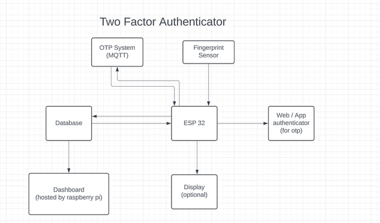
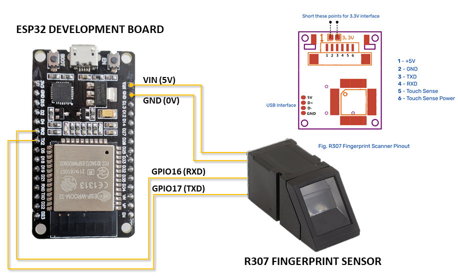
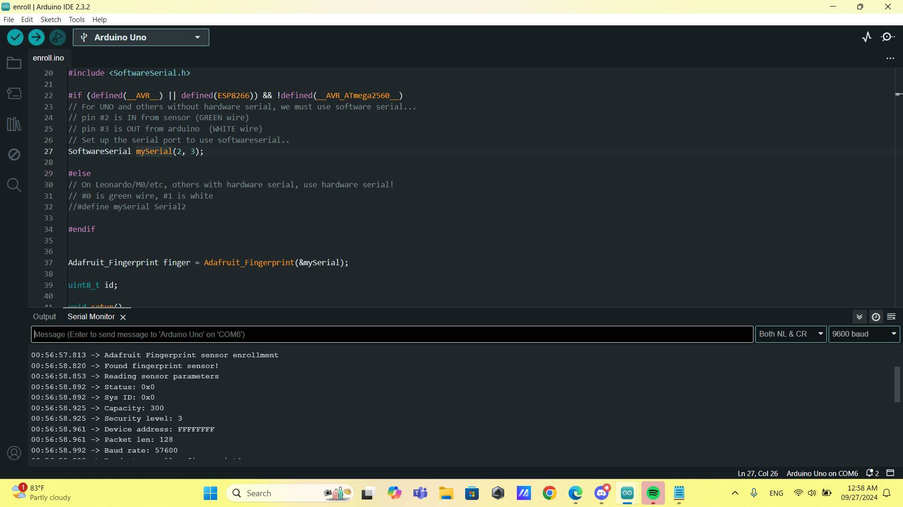

Two Factor Authenticator
Team members
- ณฐพงศ์ รอดปรีชา 6501012630069
- วศิน สิงหวงค์ 6501012630166
- ณดล หุณชนะเสวีย์ 6501012630077
- ตะวัน ลีลาเกียรติวณิช 6501012630115
- ชินบัญชร ยืนมั่น 6501012630051
Expected Task
- Web , app for OTP system.
- Client can choose what to do first.
- OTP system using MQTT broker (subscribe/public).
- Fingerprint into database check.
- Verified user's data stored in database (name, date, time).
- Display client's information through display (optional).
- Notification to admin on unrecognized attempt (on esp-home).
Diagram/Drawings

Role and responsibility (unassigned)
- Team leader
- Dashboard developer
- Mqtt developer
- Esp home configurator (raspberry pi)
- Database manager & reporting
Reference

## Report on 22 September 2567
## Report on 26 September 2567
